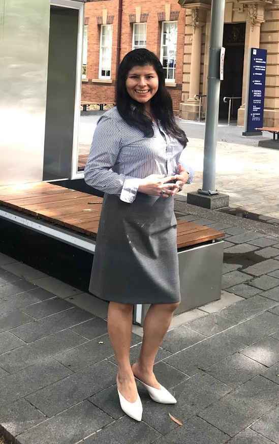
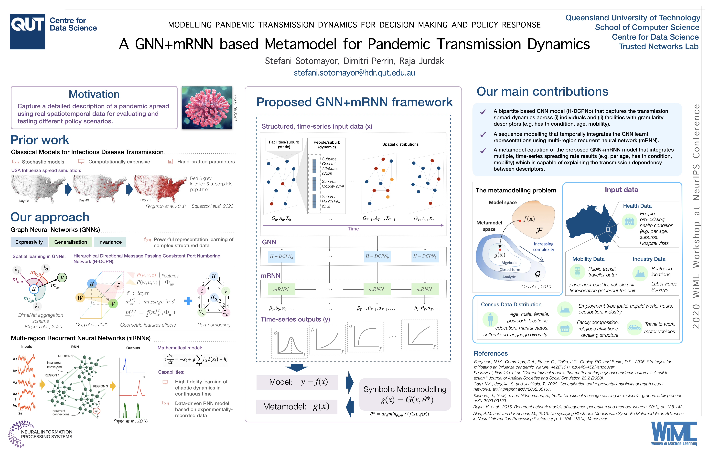
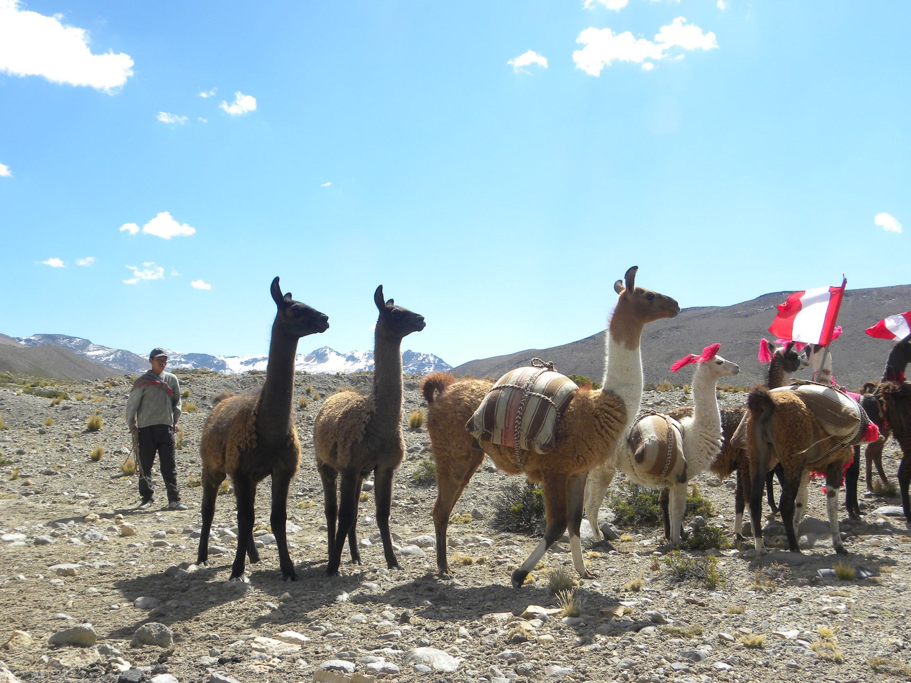
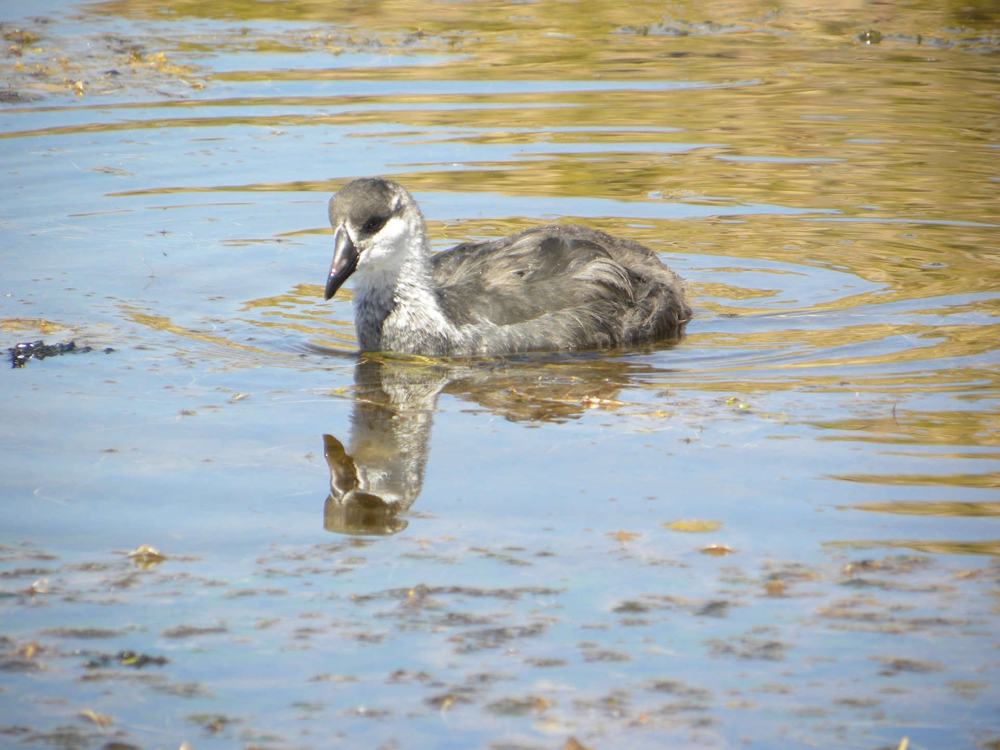
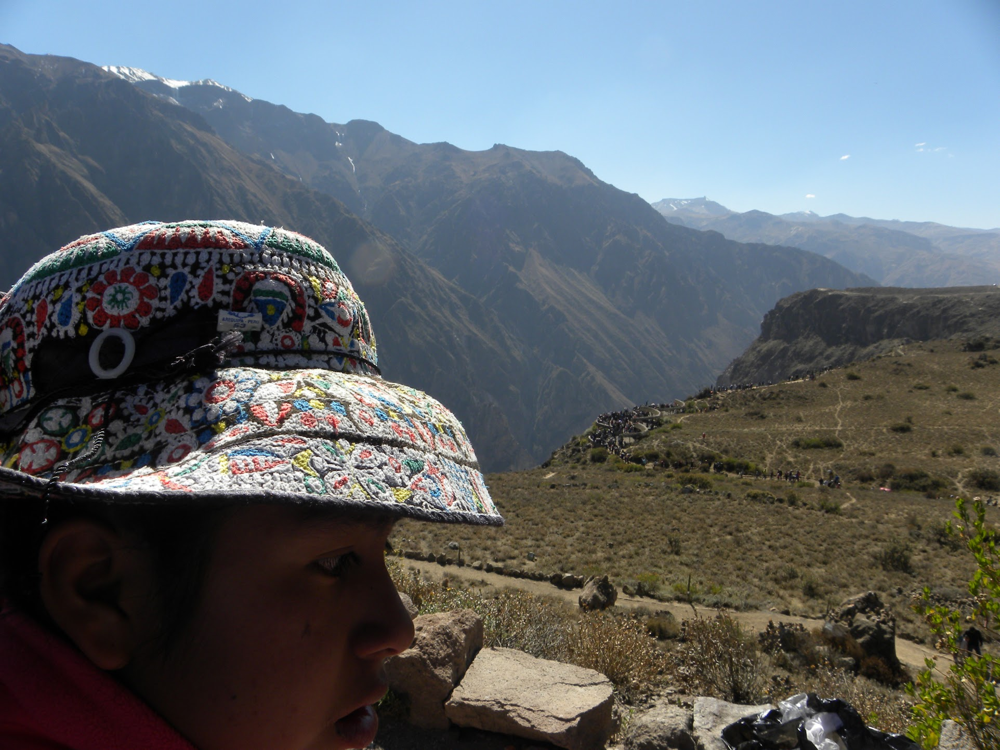

I’m a PhD student at QUT Centre for Data Science in Australia. My research focuses on epidemic modelling and complex networks, with great emphasis on artificial intelligence (AI) and neural network models. Also, I am a neuroscience enthusiast.
More broadly, I am interested in encompassing bleeding-edge AI technologies and healthcare digital transformation by applying my engineering background for the benefit of society.
Previously, my 8 years of experience as an engineer in project management and electronic tools technical support let me lead integral projects across facilities management, innovation, information technology and customer support departments, achieving the delivery of financially viable assets and reliable end-user products within the manufacture and automotive industries.
You can contact me at lsotomayorv 'at' uni 'dot' pe
Neural Networks for Epidemic Modelling

I'm interested in capturing a detailed description of a epidemic spread using real spatiotemporal data for evaluating and testing different policy scenarios. Particularly, my work focuses on people distribution and mobility behaviour analysis along a specific space/time dimension. My recent poster describes the application of artificial neural networks, GNN + mRNN, to represent a heterogeneous population using symbolic metamodelling approaches to explain the epidemic transmission dependency between descriptors, presented at the 34th Conference on Neural Information Processing Systems (NeurIPS 2020) , 15th Women in Machine Learning Workshop (WiML 2020).
Actionable Intelligence to Sustainable Change

Inequalities around the world are being hugely marked by pandemic and natural disasters, regions like the Andean America show the lack of resources in access to healthcare and basic services. In this context, leveraging digital transformation for social good by developing new approaches for biosignals processing would help clinicians to early diagnose diseases via basic communication throught telephones. This research goal aims to reduce technical complexity and lead positive impact on society.
Classical Models for Complex Systems

Classical models face potential challenges in comparison to current faster and accurate methods, mainly in modelling spatiotemporal representations where manual calibrations are not enough to simulate heterogeneous systems.
Equity, Diversity and Inclusion

Commitment to Equity, Diversity and Inclusion within a variety of projects to support specially the most needed in vulnerability situacion.
Ecomorphology & Kinematic Evolution

I'm fascinated by the link between the morphological diversity of fishes and their ecological diversity, but that's not the whole story--and kinematics can follow a different evolutionary trajectory than morphology. I'm interested in parsing out the non-linear dynamics of ecological, morphological, and kinematic evolution.
Ecomorphology & Kinematic Evolution
I'm fascinated by the link between the morphological diversity of fishes and their ecological diversity, but that's not the whole story--and kinematics can follow a different evolutionary trajectory than morphology. I'm interested in parsing out the non-linear dynamics of ecological, morphological, and kinematic evolution.